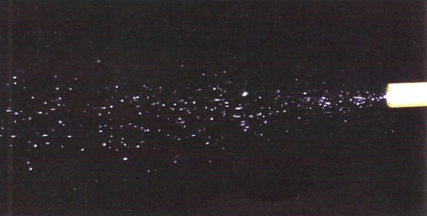
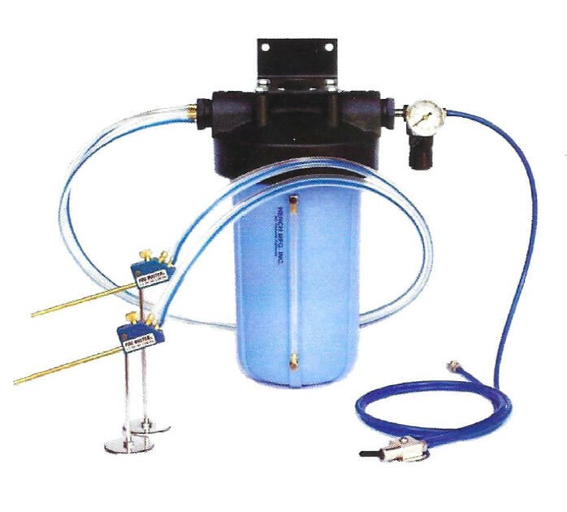

The Clear Advantage in Machine Cooling
Unlike common mist coolant systems, the FogBuster Coolant Sprayer does not atomize coolant at the nozzle tip. Coolant is carried accurately with the air stream after leaving the nozzle. Because coolant is not atomized into a fine mist, it will not float into the surrounding shop air. This patented high-volume low pressure design operates on only 10 to 20 PSI.

Conventional Mister
Creates a fog cloud that contaminates shop air and wastes coolant.

FogBuster® Sprayer
Sprays a targeted stream of droplets for maximum efficiency and a clean environment.

Scalable Systems
Available in multiple sizes with up to four sprayer heads to fit any application.
Trusted by Industry Leaders
"We have had no fogging problems in our shop since installing FogBuster... coolant usage has gone down and there is minimal cleanup."– Darrol Houser, Jet Propulsion Laboratory (JPL)
"Because of the success we have had using the FogBuster we added it (as an option) to the machines we manufacture."– Mike Zolinschi, Southwestern Industries, Inc.
"Since we've used the Fogbuster... we've experienced no more fogging problems. It also saves a lot of coolant... Our hundreds of satisfied customers throughout Europe cannot be wrong."– Roy Kloss, SOROTEC, Germany